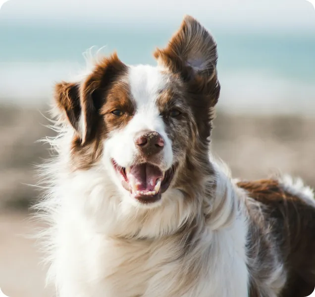
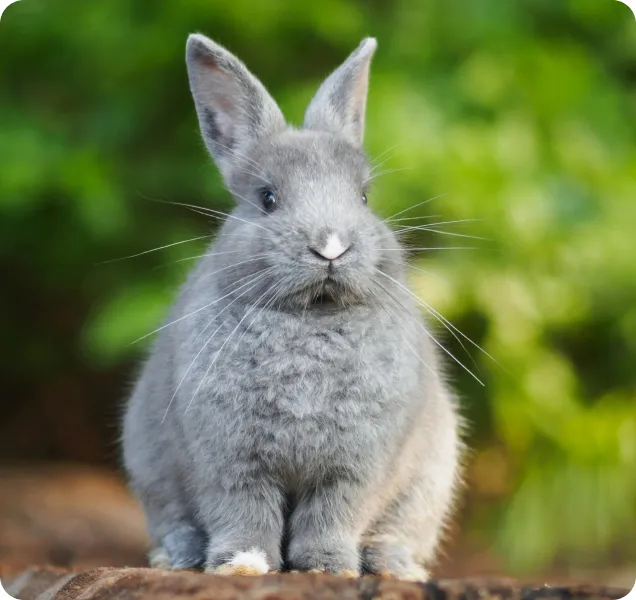
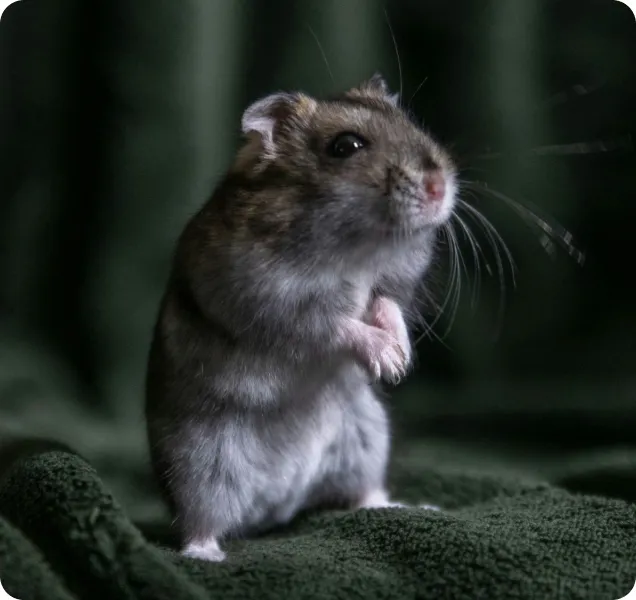
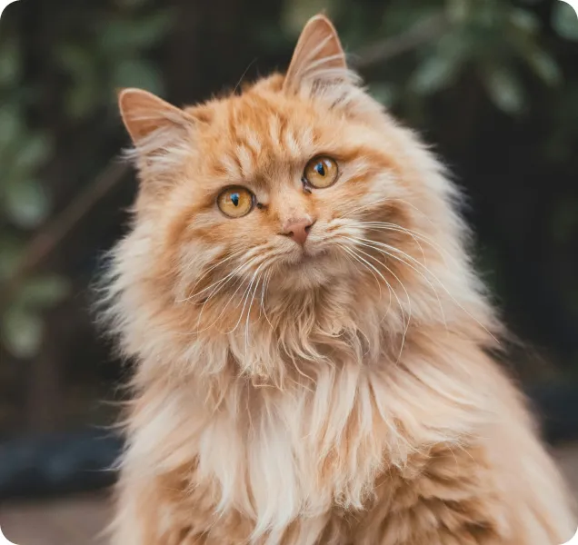
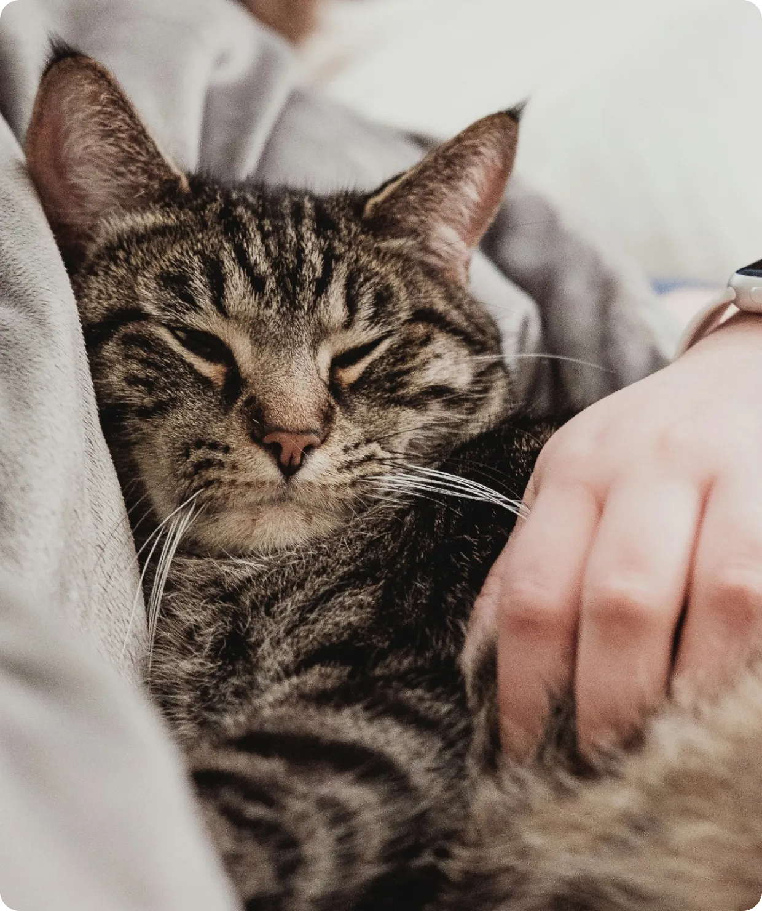
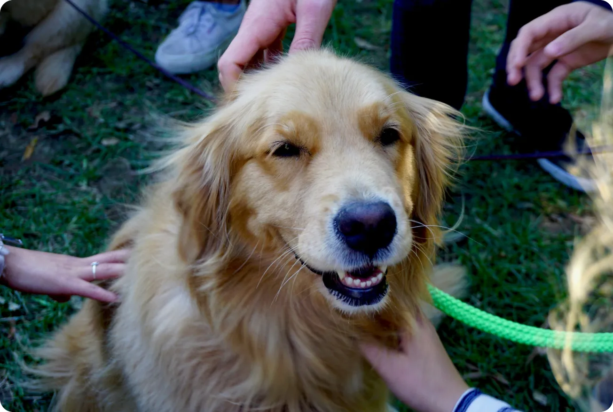
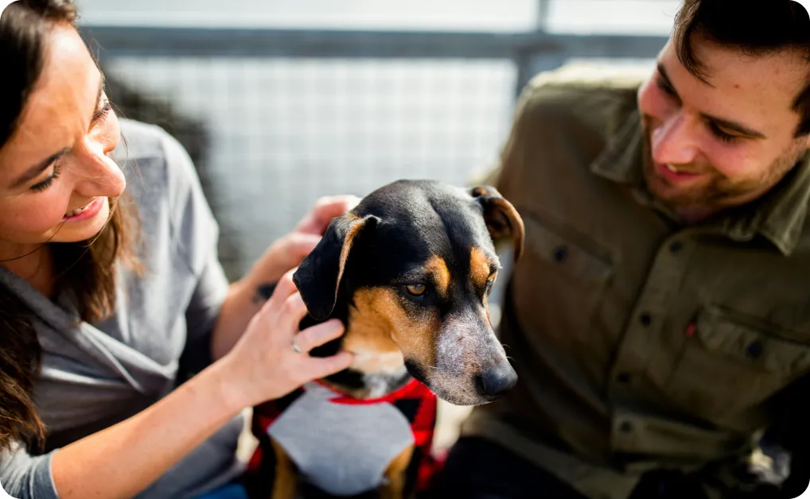
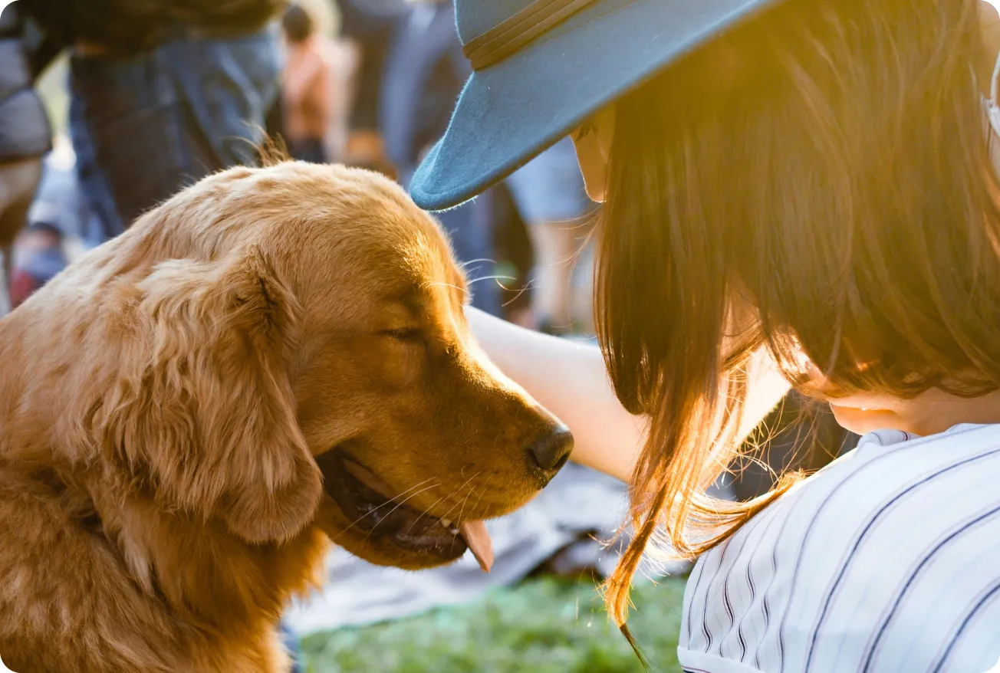
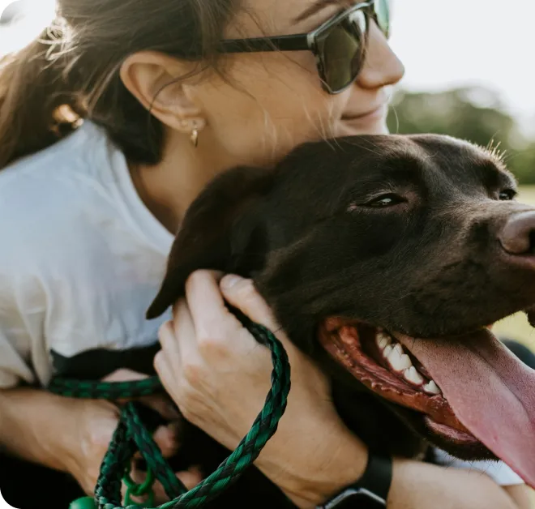
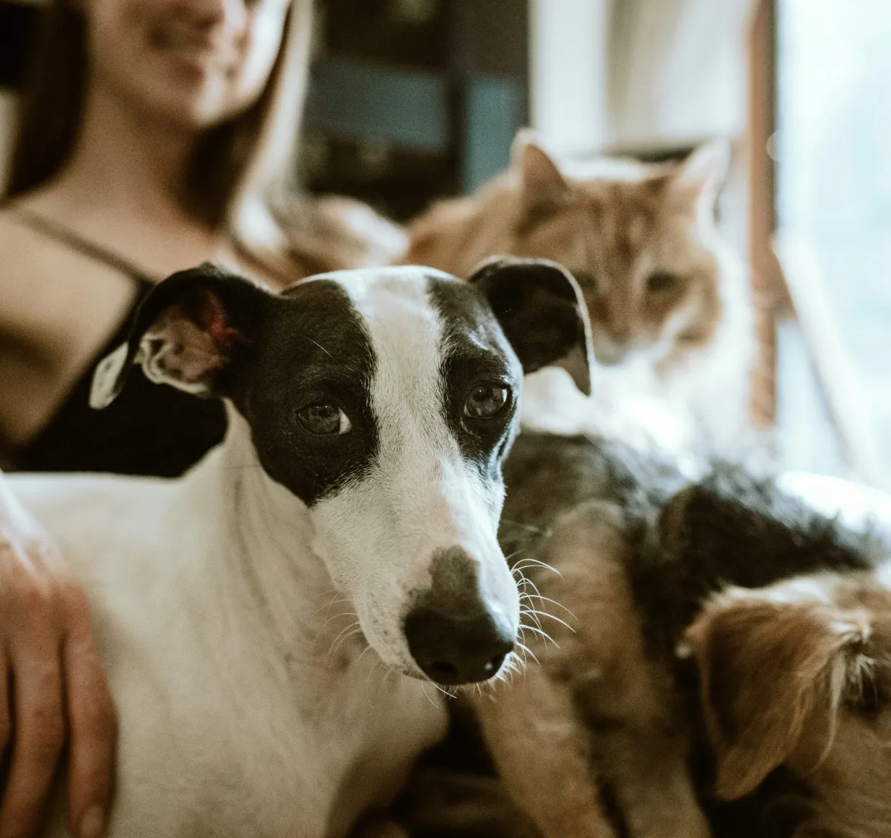

Donación única
Haz una donación única para apoyar nuestros esfuerzos continuos en el rescate y cuidado de mascotas necesitadas.
Donar ahoraDisfruta de un amor infinito con tu nuevo mejor amigo peludo. ¡Adopta ahora y empieza a crear recuerdos inolvidables juntos!




Dé un paseo por nuestra familia de mascotas y descubra al compañero ideal que se adapte perfectamente a su estilo de vida y personalidad. Tanto si busca un amigo juguetón para aventuras al aire libre como un compañero cariñoso para noches acogedoras en casa, nuestra variada selección de mascotas le espera.
¿Listo para llevar a casa a tu nuevo mejor amigo? ¡Explora, conoce, adopta y comienza hoy mismo tu viaje de amor y alegría!
Explora nuestra página web y encuentra la mascota perfecta que te robará el corazón.
Contacta con el refugio para conocer a la mascota y ver si hay buena compatibilidad.
Complete la solicitud y abone la tarifa para finalizar la adopción.
¡Llévate a casa a tu nuevo amigo peludo y empiecen a crear recuerdos juntos!

Garantizamos que encuentren el amor que merecen. Con la compasión y el sentido de comunidad como pilares fundamentales, nuestro objetivo es encontrar la familia perfecta para cada mascota, fomentando lazos de amor para toda la vida.

Tu donación puede marcar la diferencia y salvar vidas. Únete a nuestra misión de rescatar, cuidar y encontrar un hogar a mascotas necesitadas. ¡Contribuye hoy mismo!
Haz una donación única para apoyar nuestros esfuerzos continuos en el rescate y cuidado de mascotas necesitadas.
Donar ahoraConviértete en donante mensual y bríndanos tu apoyo constante para ayudarnos a salvar más vidas cada mes.
Donar ahoraApadrina a una mascota a nuestro cuidado y contribuye directamente a cubrir sus necesidades hasta que encuentre un hogar definitivo.
Donar ahoraDescubre las inspiradoras historias de nuestros voluntarios, que destacan sus conmovedoras experiencias y el impacto de su dedicación. Únete a nosotros para celebrar su compromiso de marcar la diferencia en la vida de las mascotas necesitadas.




¡Mantente al día con las últimas novedades! Suscríbete a nuestro boletín para recibir noticias, anuncios de eventos e historias conmovedoras directamente en tu correo electrónico.